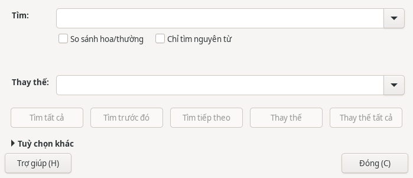
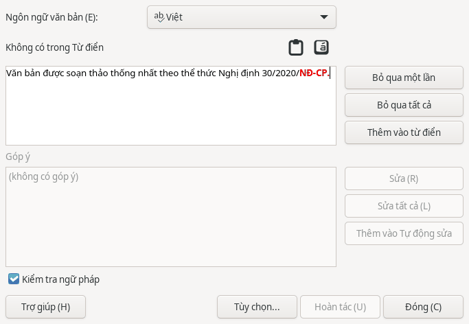

Văn bản
Văn bản: bảng, hình ảnh, tìm kiếm
Chèn bảng
- Đặt con trỏ tại vị trí cần chèn bảng.
- Chọn hoặc nhấn Ctrl+F12.
Chèn hình ảnh
- Đặt con trỏ tại vị trí cần chèn ảnh.
- Chọn .
Tìm và thay thế nội dung
- Nhấn Ctrl+H để mở .
- Nhập nội dung cần tìm vào ô .
- Nhập nội dung mới vào ô .
- Bấm để xem từng kết quả, rồi bấm khi cần đổi.
Hộp thoại còn có , và .

Kiểm tra chính tả
- Nhấn F7 hoặc chọn .
- Xem từ nghi sai và phần gợi ý trong hộp thoại. Với văn bản tiếng Việt, kiểm tra mục hiển thị .
- Dùng khi có cách sửa phù hợp, hoặc để giữ từ đang xem.

Gạch chân đỏ chỉ đánh dấu từ nghi sai. Bạn cần xem lại từ trong ngữ cảnh trước khi sửa.